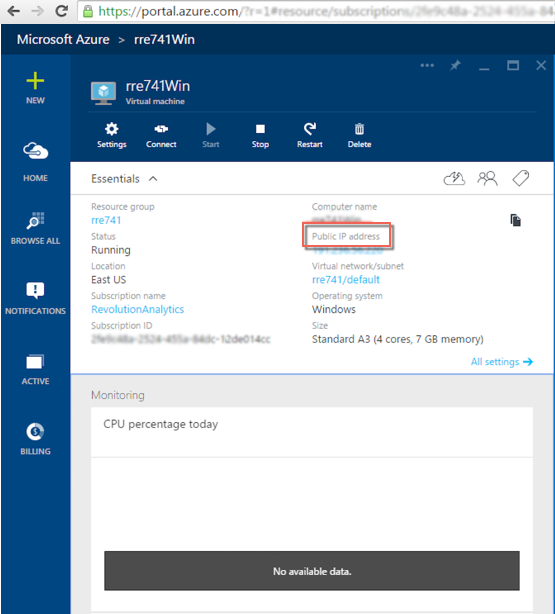
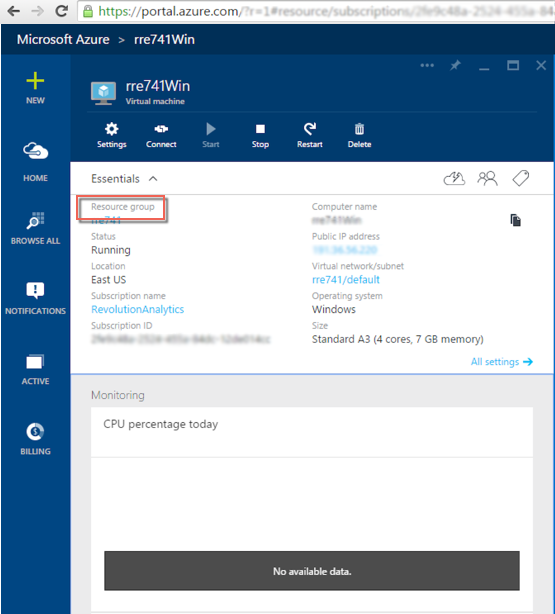
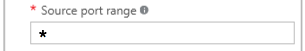

Introduction
You can set up DeployR on Microsoft Azure. For each Azure instance, be sure to:
Set the server Web context to an external, public IP address.
Set the appropriate security permissions on the internal and external ports used by DeployR in the firewall:
Open the DeployR external ports by adding Azure endpoints.
Update the firewall.
admin account, after installing DeployR.
Setting the Server Web Context
The DeployR server Web context must be updated to the Public IP address of the virtual machine.
To update the DeployR server Web context:
On Windows:
Log into the Azure portal and take note of the Public IP address.
If DeployR was installed on a virtual machine, remote desktop into that VM.
Open a Command Window with “Run as Administrator”.
Go to the DeployR tools directory under the DeployR installation directory. By default, this directory is
C:\Program Files\Microsoft\DeployR\8.1\deployr\cd C:\Program Files\Microsoft\DeployR\8.1\deployr\toolsMake sure that the MongoDB database is running. You can do so in the Services dialog by verifying that the database service has a status of
StartedorRunning. The database must be running before you can proceed to the next step.Set the appropriate public IP using the
setWebContext.batscript where<ip_address>is the public IP address of the machine. Learn more about the script arguments.setWebContext -ip <ip_address>Confirm the IP address you entered.
Disable any automatic IP detection that might overwrite the IP you just assigned.
setWebContext -disableautoFor this change to take effect restart the Tomcat service. Between stopping and starting, be sure to pause long enough for the Tomcat process to terminate.
On Linux:
Log into the Azure portal and take note of the Public IP address.
If DeployR was installed on a virtual machine, SSH into that machine.
Go to the DeployR tools directory under the DeployR installation directory. By default, this directory for the
deployr-useris/home/deployr-user/deployr/8.1.0/deployr/cd /home/deployr-user/deployr/8.1.0/deployr/toolsRun the following command to check that the database is running. If the
ps -ef | grep mongocommand returns only a single line ressembling this500 61997 61965 0 18:56 pts/0 00:00:00 grep mongo, then the database is not running. The database must be running before proceeding to the next step.ps -ef | grep mongoSet the IP using the
setWebContext.shscript where<ip_address>is the public IP address of the machine. Learn more about the script arguments../setWebContext.sh -ip <ip_address>Confirm the IP address you entered.
Disable any automatic IP detection that might overwrite the IP you just assigned.
./setWebContext.sh -disableautoFor this change to take effect restart the DeployR services. Between stopping and starting, be sure to pause long enough for the Tomcat process to terminate.
Configuring Azure Endpoints
When provisioning your DeployR server on Azure, you must open Azure endpoints for several DeployR ports. For DeployR 8.1.0, these ports are:
- DeployR HTTP port: 8100
- DeployR HTTPS port: 8101
- DeployR event console port: 8106
To configure Azure endpoints for DeployR:
Go to the main Microsoft Azure portal page.
Click the Resource Group name.
In the table in the Resource Group page, click the Network Security Group.
In the Network Security Group page, click All Settings option.
Choose Inbound security rules.
Click the Add button to create an inbound security rule for each DeployR port as follows:
In the Add inbound security rule page, enter a unique name the rule.
Set the protocol to
Any.Set the Source Port Range to the
*character.
Enter the port number to the Destination port range.
For the DeployR HTTP port, enter
8100.For the DeployR HTTPS port, enter
8101.For the DeployR event console port, enter
8106.
Click OK to save your changes.
Repeat step 6 to add inbound rules for the other DeployR ports.
Updating the Firewall
Updating your firewall is the last step. Learn more about the DeployR ports
In Windows Firewall, you must open the same DeployR ports as you configured as Azure endpoints.
From the Control Panel, open the Window Firewall.
Click Advanced Settings. The Windows Firewall with Advanced Security dialog appears.
Choose Inbound Rules. The list of inbound rules appears.
For DeployR HTTP port
8100:Open the rule called
RevoDeployR-Enterprise 8.1.0 Tomcat - 8100.Go to the Advanced tab.
Select the Public checkbox to enable public for this rule.
Click OK.
For DeployR HTTPS port
8101:Open the rule called
RevoDeployR-Enterprise 8.1.0 Tomcat SSL - 8101.Go to the Advanced tab.
Select the Public checkbox to enable public for this rule.
Click OK.
For DeployR event console port
8106:Open the rule called
RevoDeployR-Enterprise 8.1.0 Console Socket Server - 8106.Go to the Advanced tab.
Select the Public checkbox to enable public for this rule.
Click OK.
On Linux, you must disable iptables firewall or equivalent.